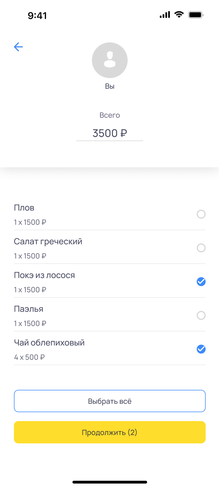
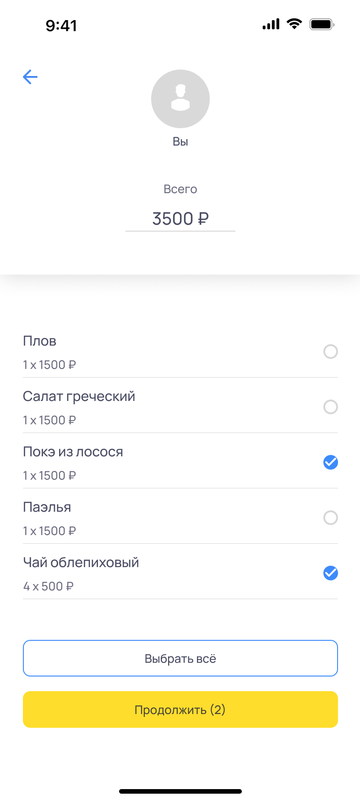
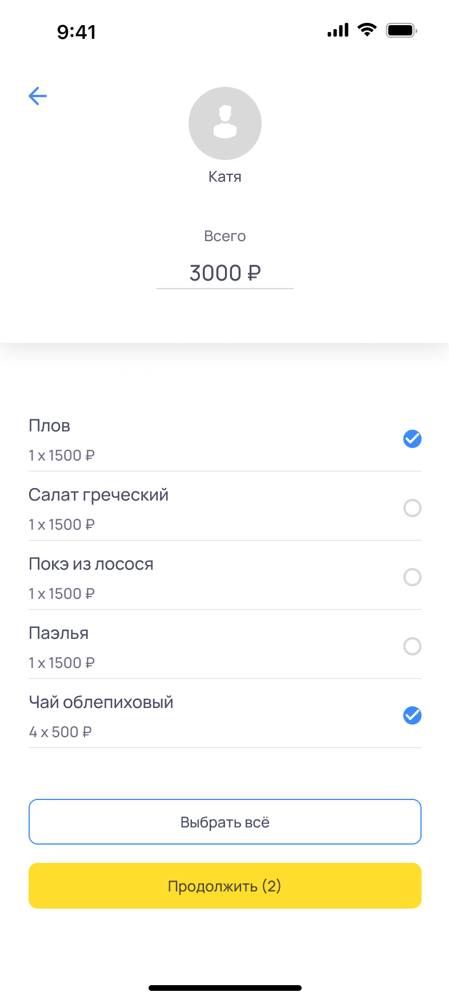
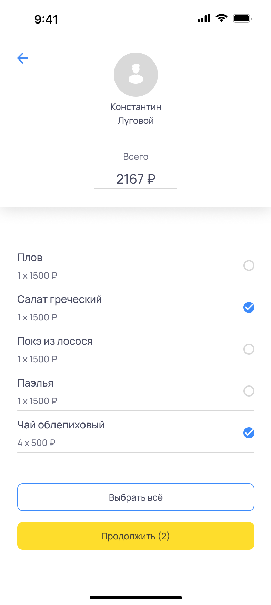
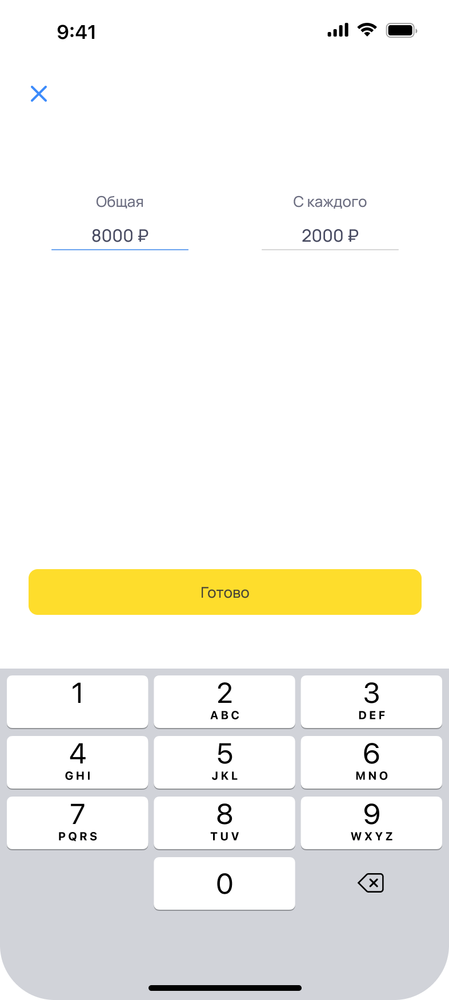
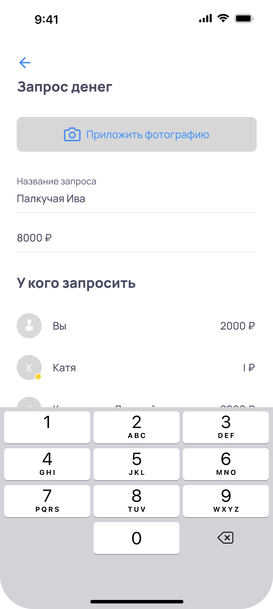
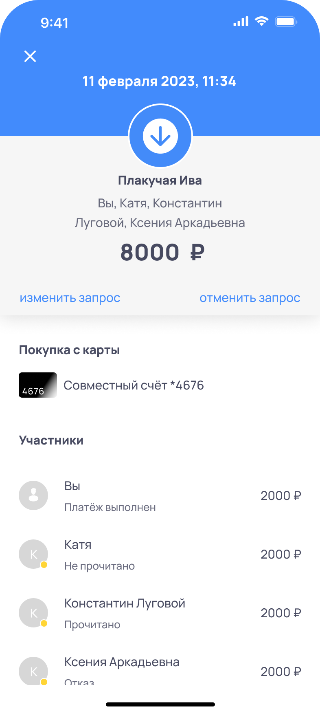
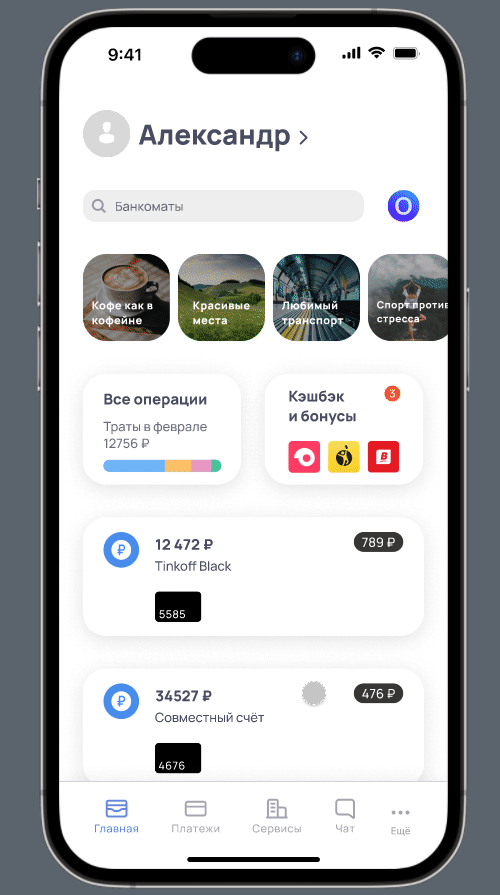

Task
Design an interface that facilitates the calculation of purchase amounts among friends, including the capability to showcase a list of purchases made from a communal account.
History
A group of individuals dined together at a restaurant. The bill was settled by one of my companions.
Script
You accompanied your friends, namely Katya, Konstantin Lugovoi, and Ksenia Arkadyevna, to a restaurant where each person placed an order for a dish and sea buckthorn tea for the entire group. However, Ksenia Arkadyevna expressed a strong desire to have a portion of your order and insisted on paying for half of it. To settle the bill at the «Weeping Willow» restaurant, you must create a transaction from a shared account and split the total amount among all the diners, including yourself.
Research
During the analysis process, certain questions may arise that have already been resolved.
What is a joint account?
An account that a user has created and provided access to funds to a trusted person. I issued a separate personalized card for him, and together you replenish the account and spend.
What is a shopping list, is it real?
Purchase information is transmitted to the Federal Tax Service via the Operator Fiscal Data system. This allows for the display of a list of purchases based on specific criteria or value.
It is possible more about the division of the account?
The bank has already implemented the account selection feature, but there is currently no option to select an account from a list. By using the existing solution as a foundation, the ability to select an account from a list can be added to the feature.
Problem
During the scenario development and user survey, a problem was raised regarding the calculation of amounts between users. It is often inconvenient and time-consuming to manually create a list and take into account each individual expense. One possible solution is to automate the process by calculating amounts between the user’s contacts. This would streamline the calculation process and eliminate the need for manual record-keeping.
Solution
Users have the option to select the same product and assign it to multiple contacts, with the product being automatically distributed among the shared items. This algorithm simplifies the process of selecting products for each individual contact based on their specific orders, allowing users to make selections without having to give it much thought.
Process
When designing the new feature, current visual and functional models were taken into consideration. By using these existing models, users can quickly and easily understand how the new feature operates. This approach promotes user-friendliness and improves the overall user experience.
About new feature:
One innovation that may not be immediately obvious is how dishes will be distributed among the various contacts. To facilitate this process, an algorithm can be developed that analyzes each individual order and assigns specific dishes to each contact accordingly. By doing so, users can more easily keep track of their individual expenses and the overall cost of the meal. This approach also helps to prevent errors or misunderstandings when splitting the bill.
I choose myself to mark the products I ordered.
The distribution system does not learn who ordered what, but instead divides the total cost evenly among all the participants. Using the New Feature to Split the Bill.
 

.png)
Here we see that I pay the most, why?
The system calculates the shared cost, taking into account that you are the only one who ordered and is being charged for the sea buckthorn tea consumed by the group. This is why your individual cost may be slightly higher than the others. However, this issue will be resolved in the future when the cost of the tea is evenly distributed among all participants.

Now we select Katya and assign the items she ordered to her.
.png)
Now Katya will contribute to the cost of the tea that you ordered.
Just a reminder that any remaining balance will be divided equally between Konstantin and Xenia.
Rounding is calculated in your favor.
Sometimes, numbers can result in an infinite recurring decimal when divided. Therefore, the system rounds up numbers to prevent this issue.

-with-rounding.png)
One person ate a little more.
It may seem funny to discuss such things, but it is important to clarify when sharing expenses between friends. In this case, Ksenia Arkadyevna requested half of your portion and insisted on paying for half. The system distributed the Salmon Poké between you and Xenia accordingly. Now each person will pay for what they ordered.
.png)

At any stage of the «Request money» process, you have the option to modify the total amount by simply clicking on it.
If the total amount is edited to a larger amount from the original check, then the excess amount will be distributed equally among all the contacts and added to their individual amounts. For example, if the original check amount was $100 and you set $110, then the additional $10 will be divided equally among all the contacts, and their individual amounts will be increased accordingly.

At any point in the Request Money screen, you can manually change the total amount for each contact by clicking on their respective total amount.


The request can be accessed and viewed in the «Transaction History» screen of the account on which it was created. From there, the request can be tracked, canceled, or modified.
This provides flexibility and control over the request, allowing the user to make changes as needed or cancel it altogether if necessary.